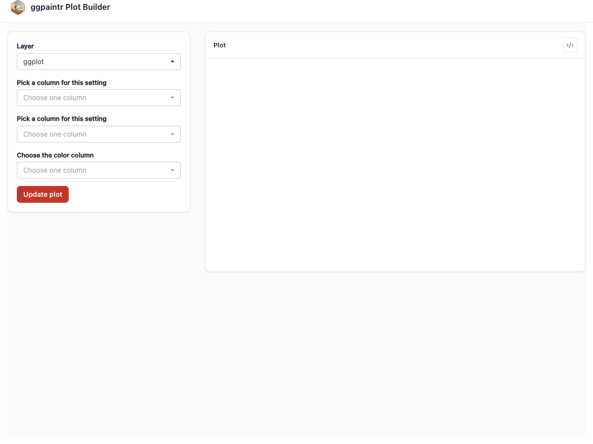
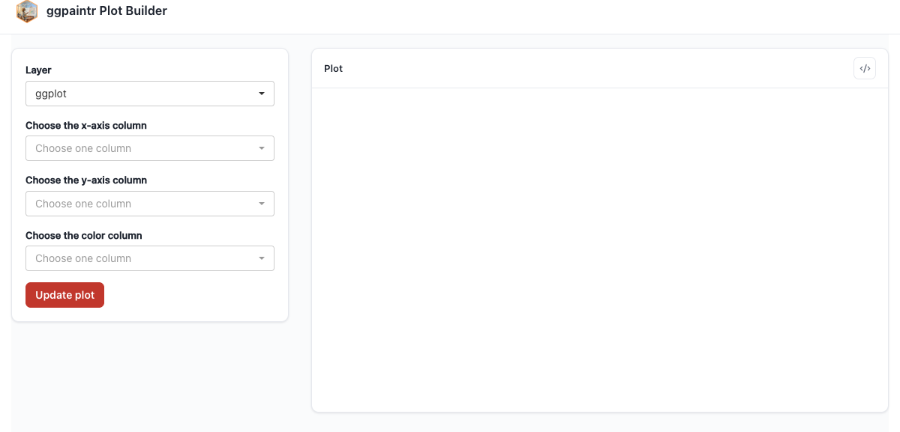
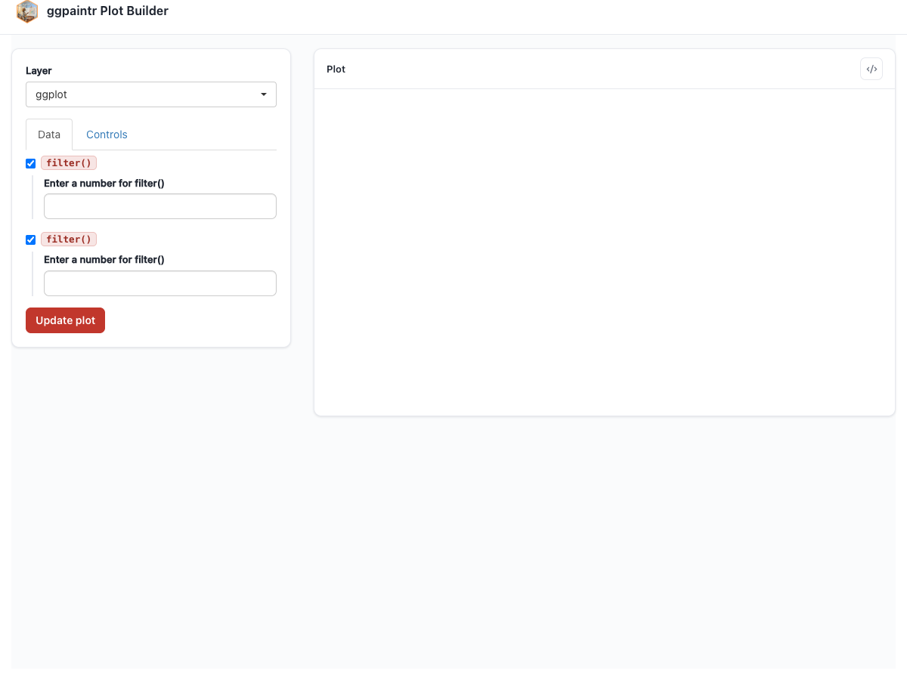
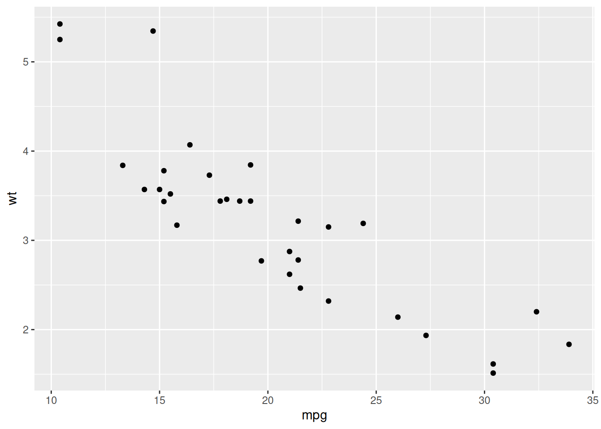
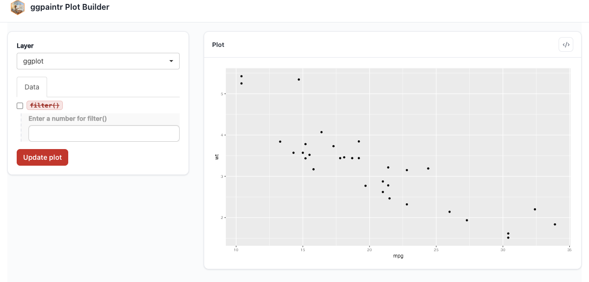

ptr_app(
"ggplot(iris, aes(ppVar, ppVar, color = ppVar)) + geom_point() + labs(title = ppText)"
)4 The Formula Language
The formula is the single source of truth for a ggpaintr app: what gets plotted, which decisions the user gets to make, and — as this chapter shows — which layers and pipeline stages are part of the chart on first paint. ptr_app() accepts the formula in two equivalent forms: as bare code (ptr_app(ggplot(...) + ...)) or as a string (ptr_app("ggplot(...) + ...")). The string form is convenient when the formula is built up programmatically or stored in a file; everything in this chapter works in both. One display caveat: in bare-expression mode R’s parser desugars |> before the formula is captured, so the generated-code panel shows the nested-call form rather than the pipe you wrote. Stay in string mode (or use %>%) if you need |> preserved — and since this chapter leans on pipelines, its examples use string mode throughout.
4.1 Two equivalent forms
The string form of the formula works exactly like the bare-code form you saw in Chapter 2:

4.2 The tour formula
One string exercising four of the five built-in placeholders:
ptr_app("
ggplot(iris, aes(x = ppVar, y = ppVar, color = ppVar)) +
geom_point(size = ppNum) +
labs(title = ppText) +
facet_wrap(ppExpr)
")
The full grammar reference is split across two help pages: positional-argument seeding lives at ?pp_placeholders; the shared = "<id>" annotation (Chapter 11) and the empty-call cleanup rule (Chapter 5) live at ?ptr_app.
4.3 Data pipelines in the formula
A layer’s data argument is allowed to be a pipeline. Both |> and %>% are accepted, and the two can be mixed in the same chain. Each pipeline stage that contains a placeholder gets its own row of widgets under the layer’s Data subtab, plus a per-stage enable/disable toggle that rewrites the generated code as if that step were never there. Column pickers downstream of a stage lazily re-resolve their column choices against the current Data-subtab inputs, so changing a filter threshold immediately refreshes the picker below it.
ptr_app(
"mpg |>
dplyr::filter(displ > ppNum) |>
dplyr::group_by(class) |>
dplyr::filter(dplyr::n() > ppNum) |>
dplyr::ungroup() |>
ggplot(aes(ppVar, ppVar, color = class)) +
geom_point(alpha = ppNum)"
)
ggplot(). Each placeholder-carrying stage gets widgets and a toggle under the Data subtab.Chapter 19 § “Data-cleaning pipelines” shows this same example next to the plain dplyr pipeline it parameterizes.
4.3.1 What is supported
- Both pipe operators, possibly mixed in the same chain:
df %>% filter(...) |> ggplot(...). - Bare-symbol stage heads:
filter(...),head(...),transform(...). - Namespaced stage heads:
dplyr::filter(...),tidyr::pivot_longer(...). - Parenthesised heads:
(filter)(...). ppUploadas the pipeline head:ppUpload |> dplyr::filter(...) |> ggplot(...)— every downstream stage and placeholder resolves against the uploaded data.- Per-layer pipelines on multi-layer formulas: each layer can have its own data-arg pipeline; the Data subtabs are scoped per layer.
- Placeholders in any stage:
ppVar,ppText,ppNum,ppExprinside any stage’s call resolve as if that stage were a regular layer call.
4.3.2 What does not work yet
Anonymous functions as pipe stages. df |> (\(x) x[x$cyl > 4, ])() |> ggplot(...) is not rejected — the app boots and the lambda runs verbatim in the generated code — but the stage is invisible to the widget machinery: it gets no Data-subtab row and no enable/disable toggle. Worse, never put a placeholder inside the lambda body: something like (\(x) x[x$cyl > ppNum, ])() is silently ignored — no widget appears and no warning is raised. Prefer a named verb, or lift the anonymous function to a named helper in the calling environment and use it as a bare-symbol stage (df |> my_helper(ppNum) |> ggplot(...)), so the stage can carry placeholders and a toggle.
4.4 Boot-state toggles: ppLayerOff and ppVerbSwitch
If a layer should start unchecked in the layer panel, or a pipeline stage should start disabled (or simply be toggleable), that decision belongs in the same text you wrote the chart against. Two structural keywords carry it inside the formula: ppLayerOff(layer_expr, hide) for layers and ppVerbSwitch(.data, verb_expr, switch_on, label) for pipeline stages. For ppLayerOff the positive sense is hide = TRUE (“boot with this layer off”); for ppVerbSwitch it is switch_on = TRUE (apply the verb — the checkbox boots checked).
The keywords are also legal R outside ptr_app(), so the same formula text renders correctly under naked ggplot. This chunk is plain R — no app on the stack — and really runs:
library(ggpaintr)
library(ggplot2)
# ppLayerOff: hide = FALSE adds the layer; hide = TRUE drops it.
ggplot(mtcars, aes(mpg, wt)) +
ppLayerOff(geom_point(), FALSE) + # layer present
ppLayerOff(geom_smooth(), TRUE) # layer absent (returns NULL)
# ppVerbSwitch: switch_on = TRUE applies the verb; switch_on = FALSE skips it.
mtcars |>
ppVerbSwitch(dplyr::filter(mpg > 20), switch_on = TRUE) |> # filtered
nrow()[1] 14mtcars |>
ppVerbSwitch(dplyr::filter(mpg > 20), switch_on = FALSE) |> # bypassed
nrow()[1] 32The same formula wrapped in ptr_app() boots the matching pieces with the right checkbox state, and the user can toggle them at runtime:
ptr_app(
"mtcars |>
ppVerbSwitch(dplyr::filter(mpg > ppNum), switch_on = FALSE) |>
ggplot(aes(mpg, wt)) +
geom_point() +
ppLayerOff(geom_smooth(method = 'lm'), TRUE)"
)
geom_smooth checkbox boots unchecked, and the filter stage’s toggle boots disabled. Flipping either widget re-renders with that piece active.4.4.1 ppVerbSwitch extras: label = and promoting a bare verb
label = is an optional length-1 string that becomes the checkbox’s head label in the Data subtab; without it the UI falls back to an auto-generated verb() label. And switch_on = TRUE promotes a bare verb — one with no placeholder, which would otherwise get no checkbox at all — into a user-toggleable stage:
ptr_app("mtcars |> ppVerbSwitch(filter(cyl == 6), switch_on = TRUE, label = 'Six-cylinder only') |> ggplot(aes(mpg, wt)) + geom_point()")4.4.2 The first-position-data assumption
ppVerbSwitch evaluates the verb after inserting .data as the verb call’s first positional argument — the same convention |> uses, matching every dplyr and tidyr verb. A verb whose data argument is not in position 1 (think my_fit(formula, data, weights)) would get .data injected ahead of formula, silently shifting every argument. The escape valve is a named one-line wrapper that adapts the signature:
fit_first <- function(.data, formula, ...) my_fit(formula = formula, data = .data, ...)
# Now it composes:
# "mtcars |> ppVerbSwitch(fit_first(mpg ~ wt), switch_on = FALSE) |> ggplot(...)"4.4.3 spec = overrides the formula-side default at boot
ppLayerOff / ppVerbSwitch set the default boot state. The spec = argument on ptr_app() / ptr_server() carries restore values for any widget — except a ppUpload file input, which cannot be restored from a spec (only its companion text input is settable) — and a spec = entry overrides the formula-side default at boot. Round-tripping a saved app state therefore composes cleanly with formula-side toggles: capture state$spec() from a running app, re-launch with it, and a layer the formula boots off can come back on:
ptr_app(
"ggplot(mtcars, aes(mpg, wt)) + geom_point() + ppLayerOff(geom_smooth(), TRUE)",
spec = list(geom_smooth_checkbox = TRUE) # overrides the formula-side OFF
)The precedence rule is: formula-side default first, then spec = per-widget override. See ?ptr_app for the full spec = shape.